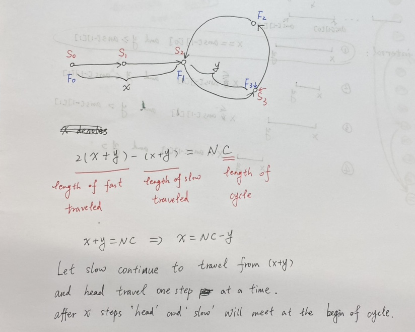

链表高频题和必备技巧
解决链表相关题目的注意点
- 如果题目的空间要求不严格，可以使用语言标准库提供的容器解决，很容易
- 如果题目的空间要求严格，或者面试官要求对空间使用做优化，那么需要实现空间复杂度为
O(1)的算法 - 最常用的技巧是快慢指针
- 链表的算法都比较简单，考察的是coding能力，尽量不使用容器讨巧实现
- 最重要的还是多写多练
返回两个无环链表的第一个相交节点
问题描述：给定两个链表的头指针，判断两个链表是否有相交，如果相交返回第一个相交的节点
解法：使用一个哈希表来保存某一个链表的所有节点的内存地址，然后遍历第二个链表，判断是否有相同内存地址的链表节点存在
解法2：两个链表如果相交，在相交节点之后就只剩一条链表路径了。那么遍历两个链表到结尾的非空节点，这两个节点内存地址一定一样，否则不相交。然后计算出哪个链表更长，让那个更长的链表先走(a.len()-b.len())步，然后再同时遍历两个链表，得到第一个相同内存地址的节点就是答案
每k个节点一组翻转链表
问题描述：对一个链表，以k个节点为一组，组内翻转链表，如果结尾剩的节点不够k个，那么留着不动
解法：使用一个数组保存所有节点，组内翻转数组元素，最后制作一个新链表返回
解法2：对每k个节点做链表翻转，组内原尾节点成为组内头节点，组内原头节点成为组内尾节点，并且指向下一组的头节点，最终返回头节点。第一组需要特殊处理，因为第一组原尾节点是修改后会成为整个链表的头节点，后续每个组翻转完，前一个组的尾节点需要指向当前组翻转完的头节点
⚠️Rust实现分组翻转链表可以利用一个senital节点，然后翻转操作用一个可变引用实现，具体参照代码
复制带随机指针的链表
问题描述：链表节点结构除了自身的值和指向下一个节点的指针以外还有一个指针，可以指向链表内的其他节点，要在不修改原链表的条件下拷贝整个链表
解法：使用一个哈希表来存储原链表，每个key都是原链表节点的内存地址，每次存入一个节点就新建一个值相同的节点，然后遍历新节点组成的链表，查找哈希表中原始链表的节点的随机指针的值设置自己的值，最终返回新链表的头节点
解法2：在原链表上每一个节点后插入一个值相同的节点，这个节点的随机指针先置空，然后遍历链表，新链表的随机指针的值等于它之前节点（原链表对应节点）的随机指针的值，这里就是利用了链表逻辑有序的特点来得到原节点的随机指针的值
⚠️C语言实现中，局部变量在栈上分配空间，离开自己的作用域之后栈上的空间可能会被其他部分使用，所以需要在堆上分配内存（malloc）并且使用前必须初始化其中的内容
判断链表是否为回文结构
回文：从左到右和从右到左遍历结果相同，空字符串是回文
快慢指针：目的是求中点
问题描述：判断一个链表是否为回文
解法：使用一个栈，将链表元素压入栈中，然后从头遍历链表并和栈中的元素比较，因为出栈是逆序，所以如果两个遍历结果相同即为回文
解法2：使用快慢指针，得到中点，然后翻转中点后的链表，从链表的头部和尾部遍历链表，如果相同则返回。⚠️得到结果后需要把链表恢复到原始状态
考研常出题
问题描述：将链表a1->a2->a3->a4->a5->a6->a7->a8改造为a1->a8->a2->a7->a3->a6->a4->a5
解法：同样可以使用快慢指针解决，在遍历翻转后的数组过程中直接重组链表结构即可
返回一个链表的第一个入环节点
问题描述：给定一个链表，如果无环则返回空，否则返回第一个入环的节点
解法：使用一个哈希表容器（HashSet结构），遍历链表，将每一个节点的内存地址存入哈希表中，直到碰到重复节点返回这个节点
解法2：直接记结论，使用快慢指针遍历，第一次两个指针碰到后，慢指针继续走，快指针从链表头部以每次一个元素遍历，直到两个指针再次相遇，返回该结果。计算原理如下图

在链表上排序，要求时间复杂度O(N*logN)，空间复杂度为O(1)，且是稳定排序
解法：使用归并排序，且在merge操作过程中不使用额外空间，可以满足要求